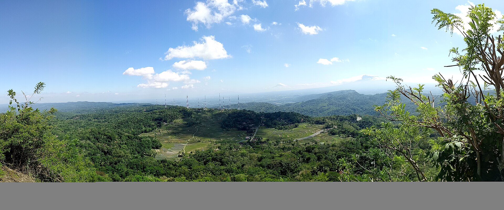

Desa Wanasari, Kabupaten Sukamaju
Urus surat desa tanpa bolak-balik
Ajukan surat dari ponsel, pantau statusnya dengan nomor tiket, lalu ambil di kantor desa saat sudah selesai.
Ajukan surat Cek status tiketMau ke mana hari ini?
Ajukan surat dan cek statusLima jenis surat. Isi formulir, dapat nomor tiket, pantau sampai selesai.
PengumumanPosyandu, kerja bakti, bantuan, dan jadwal air.
Kabar desaCerita terbaru dari warga dan kelompok tani.
Produk wargaKopi, anyaman bambu, jajan pasar, dan beras. Pesan lewat WhatsApp.
Anggaran desaTabel dan grafik ke mana uang desa dipakai.
Kontak dan pengaduanAlamat, jam layanan, dan tempat menyampaikan keluhan atau usul.
Kabar terbaru
Baca semua kabarWanasari dalam angka
Gambaran singkat desa pada akhir Oktober 2026.
- Penduduk
- 4.218 jiwa
- Surat selesai tahun ini
- 1.164
- Balita terpantau posyandu
- 312 anak
- Petani kopi aktif
- 32 orang
Agenda bulan ini
Kegiatan rutin dan khusus yang terbuka untuk warga pada November 2026.
- Musyawarah dusun KrajanBalai Dusun Krajan12 Nov, 19.30
- Pelatihan sangrai kopiRumah sangrai BUMDes14 Nov, 09.00
- Senam lansiaHalaman PolindesTiap Jumat, 06.30
- Bank sampah bukaSamping balai desaTiap Sabtu, 08.00
- Pasar desaLapangan Wanasari22 Nov, 06.00
- Rapat karang tarunaBalai desa28 Nov, 19.00
Ada yang belum jelas?
Kantor desa buka Senin sampai Jumat, pukul 08.00 sampai 15.00. Pengaduan dan usul juga bisa dikirim lewat situs ini.